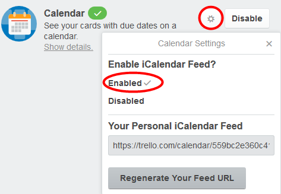

Only board administrators can enable Power-Up features.
Note: Third-party applications do not reflect changes on Trello boards in real time.
To add the board calendar to your Outlook or to other calendar application, go to Show Menu > Menu > Power-Ups and click the settings icon next to the Calendar feature.

Under Enable iCalendar Feed click Enabled.
Copy the feed and add it to the calendar in your email client, so you can see the cards on their due dates directly in your calendar.
You can even group multiple board calendars in your third-party application.
When you want to refresh the entries in your calendar, click Regenerate Your Feed URL and add the URL again to your email calendar.